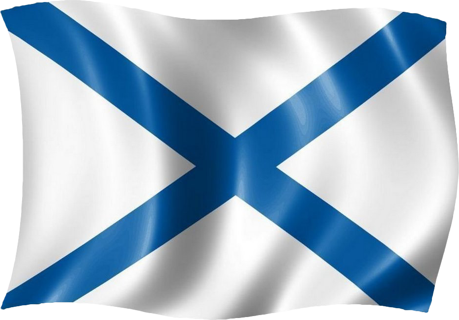

День Военно-Морского Флота
Когда отмечают
День Военно-Морскоого Флота — памятный день Военно-Морского Флота Российской Федерации. Отмечается ежегодно в последнее воскресенье июля. Установлен Указом Президента Российской Федерации от 31 мая 2006 года № 549 «Об установлении профессиональных праздников и памятных дней в Вооружённых силах Российской Федерации»
В День ВМФ России свой профессиональный праздник отмечают все те, кто стоит на страже морских рубежей России, все те, кто связывает годы жизни и службы с обеспечением боеготовности кораблей и частей ВМФ, члены семей военнослужащих, рабочие и служащие флотских учреждений и предприятий, ветераны Великой Отечественной войны и Вооружённых Сил.
История
Начало созданию флота в России положил Петр I. В 1695–1696 годах, во время его похода на турецкую крепость Азов, был сформирован первый флот в Азовском море. Во время Северной войны 1700–1721 годов появился Балтийский флот.
На протяжении XVIII–XIX веков Россия снискала себе славу великой морской державы. Русско-японская война 1904–1905 годов, с одной стороны, пошатнула положение флота, но с другой – способствовала появлению новых подводных сил в составе ВМФ страны.
К началу 1930-х годов удалось создать материально-техническую базу для строительства новых кораблей. Были открыты научно-исследовательские институты, обеспечивающие разработку новых типов судов.
Постоянные группировки сил в море складывались по мере решения задач, связанных с приобретением выходов страны в Мировой океан и ее включением в мировую экономику и политику.
На Балтике флот постоянно существовал с 18 мая 1703 года, Каспийская флотилия – с 15 ноября 1722 года, а флот на Черном море – с 13 мая 1783 года. Нынешний Тихоокеанский флот в качестве постоянной группировки существует с 21 апреля 1932 года, а Северный – с 1 июня 1933-го.
Празднование Дня ВМФ в городах России
С 2017 года главный военно-морской парад проходит в Санкт-Петербурге. На воде и берегу проводятся показательные выступления и спортивные соревнования. Спасатели, морские пехотинцы и бойцы подводного спецназа демонстрируют зрителям свои умения. В День ВМФ проходят показательные ракетные и артиллерийские стрельбы и демонстрация новейшего оружия, которым оснащен флот.
С особым размахом праздник отмечается в Севастополе, Кронштадте, Калининграде и Новороссийске. В День ВМФ любой желающий может побывать внутри военного судна и своими глазами посмотреть, как оно устроено. На главных площадях городов популярные артисты устраивают концерты, чтобы лично поздравить моряков и ветеранов флота с праздником. Зрители также могут побывать на выступлениях морских и военных духовых оркестров, различных выставках и мастер-классах.
Тест
А теперь можете проверить свои знания)
Как же мы празднуем день ВМФ?
День Военно-Морского флота для нашей семьи - это не просто праздник, это настоящее семейное торжество, которое мы проводим на нашей даче, окруженные близкими и друзьями. Этот день становится для нас символом единства и гордости за наш Военно-Морской флот. Уже с самого утра мы начинаем готовиться к этому знаменательному событию. Все члены семьи одевают тельняшки - символ моряков и военно-морской службы. В 14:00 мы собираемся у флагштока для поднятия флага Российской Федерации и Военно-Морского флота под гимн страны. Этот момент наполняет нас гордостью и уважением к нашей родине. После поднятия флага раздается троекратное ура, символизируя наше восхищение и уважение к Военно-Морскому флоту. После церемонии мы все садимся за стол, где нас ждут настоящие боевые угощения. Бабушка в тот день готовит шурпу и макароны по флотски - блюда, которые символизируют силу и выносливость моряков. За столом мы делимся воспоминаниями о боевых подвигах наших семейных героев и обсуждаем актуальные события в мире. Но самым эмоциональным моментом становятся выкрики "Северный флот - не подведет", которые звучат регулярно из-за стола. Это слова поддержки и веры в наш флот, которые берут начало из глубины сердец каждого из нас. Гулянка продолжается до поздней ночи, и наши друзья и родные разделяют с нами этот день, наполняя его радостью, весельем и патриотизмом. День ВМФ для нашей семьи - это не просто праздник, это день, когда мы вместе отмечаем нашу гордость и уважение к Военно-Морскому флоту, который всегда готов защищать нашу родину на морях и океанах.
Фото и видео
.jpeg)